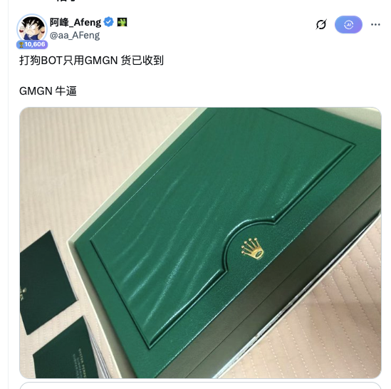
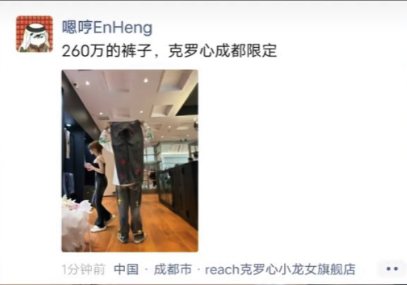
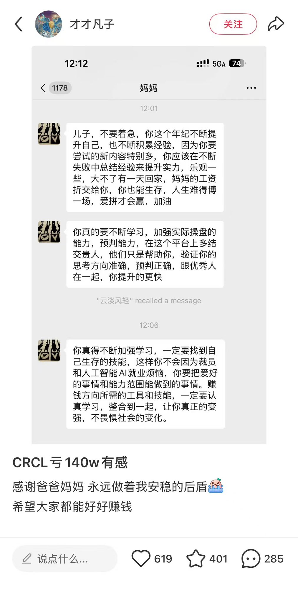

#5 · benson_doge · 2026-07-03T15:34:43.000Z0x孙挥挥手提了5000w的法拉利，嗯哼洒洒水买了260w的裤子，阿锋靠着交易积分白嫖了50w的绿水鬼Show more
#6 · mk66623 · 2026-07-03T15:12:42.000Z今天看到一个故事。说有个人合约爆仓了，他就在推特上给各种各样的大佬私信。说能不能借我 3 万刀？我以后肯定还给你。大多数人看到了，基本都是已读不回，或者根本就不打开这条私信。但是他从来都不放弃，只要有人愿意回复他，他都会不停地跟对方聊天，就像做保险推销员一样。Show more
#7 · keyahayek · 2026-07-04T05:32:36.000Z一个在公链工作的币圈老哥对 CRCL 上了头，亏了 140 万，事到如今最对不起的就是家人。钱都到了美股，那么多资产可以买，为什么要买币股呢？回答我！私以为币股就只有一个阶段可以买，就是币的主升浪启动，股票没同步的时候。吃涨的阶段不太一样的钱，类似曾经的山寨币。